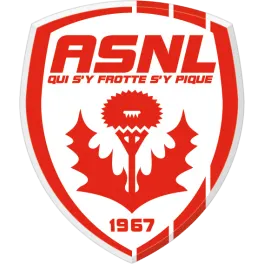
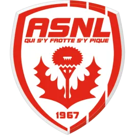
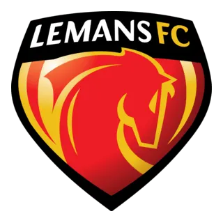

Prochain Rendez-vous au Chaudron
Chargement du compte à rebours...
Mon Calendrier de Supporter
Liste des matchs où j'irai en Kop Sud (Tribune Jean Snella) :
| Date | Adversaire | Compétition | Place | Score | Résultat |
|---|---|---|---|---|---|
| Sam. 22 Nov. | Nancy | Ligue 2 | Kop Sud (Snella) |
 N.A

N.A

|
A Déterminer |
| Sam. 18 Oct. | Le Mans | Ligue 2 | Kop Sud (Snella) |
2 - 3

|
Défaite |
| Sam. 20 Sept. | Reims | Ligue 2 | Kop Sud (Snella) |
3 - 2

|
Victoire |